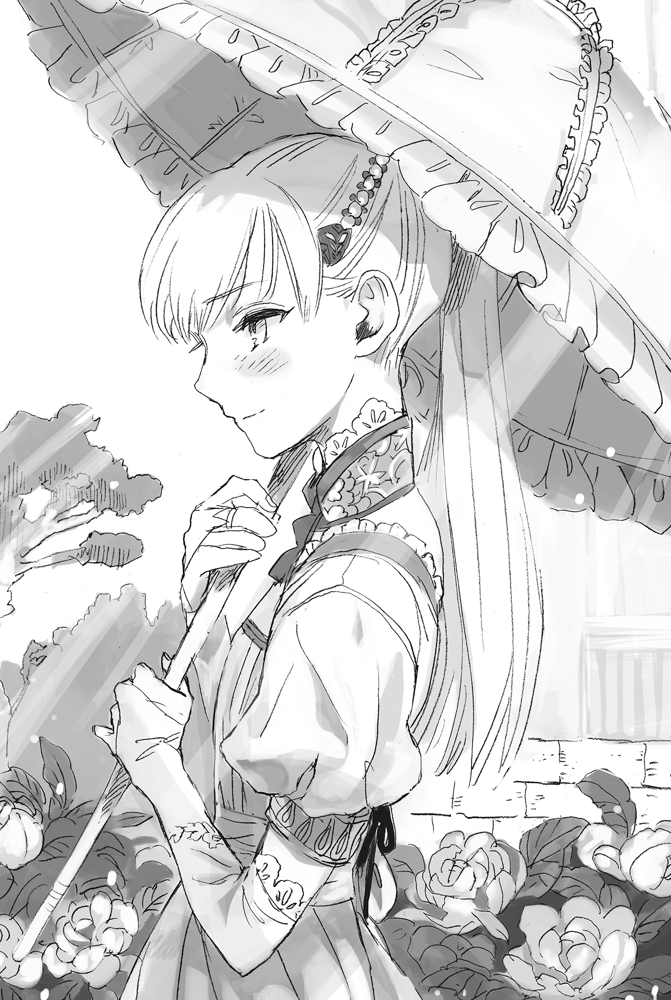
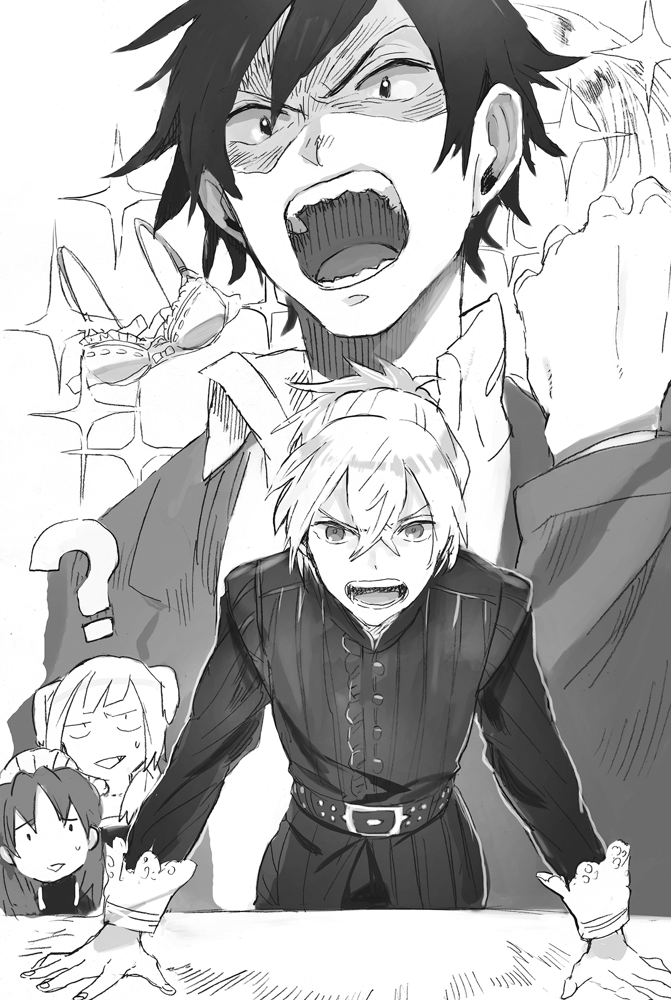
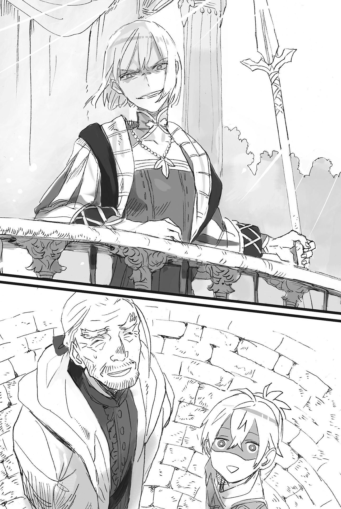

Chapter 2 – Business Chance Arrival!
.
Part 1
The knight academy has a day off once every eight days.
One year consists of 365 days and one day consists of 24 hours──even though this is the same as Earth, for some reason, the number of days in a week is different.
It seems that the reason behind this was due to the number eight being viewed as the perfect number by the continent’s largest religious organization, the Europa faith.
The creation of heaven and earth took 80,000 years and was completed through the effort of eight gods.
Those gods created this Aurelia continent and seven islands. In other words, eight lands were created.
Like that, the holiday finally arrived but…….
.
「Baldr-sama, can you accompany me shopping today?」
The tense atmosphere in the cafeteria was instantly pushed into a world of chilling ice by the nonchalant words of Seyruun.
「C-can I come along too?」
Brooks mustered all his courage and raised his right hand.
「I’m sorry.」
A tragic end for Brooks.
Seyruun mercilessly cut him down with an impeccable smile. For some reason, Brooks felt shivers run down his spine from that savageness of Seyruun. In all likelihood, it looks like he’s a soft M.
「T-then perhaps at another day……!」
「I refuse.」
「……Yes……」
Brooks shivered yet again, with a smile of ecstasy on his face……in exchange, losing something important as a human.
「Shouldn’t it be fine if Brooks comes along?」
「READ THE MOOD A LITTLEEEEEEE!」
Brooks’s expression changed and he hit the table after Baldr tried to intervene out of pity.
(Don’t you know that Seyruun-san wants to go out alone with you? Stop making that conflicted face as though you want to say 「Even though I’m trying to invite you along」 to me!)
The classmates watching this go on were also enraged, with eyes that look like they’re going to cry tears of blood.
「──Can something like this be allowed?」
「How long must our trial continue?」
「Don’t give up! Surely there is a path that exists for us!」
The gazes of the male classmates talking to each other in low whispers were poured towards Silk, who opened the door to the cafeteria at that exact timing.
「Silk-san, please tell him off strictly!」
「The academy isn’t a place to flirt with a maid!」
「Going on a date with just the two of them is absolutely unforgivable!」
It was also questionable whether it was alright for students who aimed for knighthood to tattle childishly like this, but they couldn’t really be blamed in this case.
At present, the gap of strength between them and Baldr was too wide.
Only Brooks and Silk could possibly oppose him head-on.
With Brooks supporting Seyruun half-heartedly (joyfully), their only remaining hope was Silk.
「──Right.」
Silk nodded spiritedly in response to their demand. She then started walking briskly towards Baldr.
Silk was gathering the heated gazes of her classmates that were filled with expectation while she stood in front of Baldr and declared this.
「I’m coming too. You promised that we’d look for armor for me the other day.」
「THAT’S WHAT YOU MEANNNNNNNNN!!!」
The men who wished for Silk to pulverize Baldr and Seyruun’s date for them underestimated Silk’s own feelings on wanting to go out together with Baldr.
Humans could only see what they wanted to see.
After that, a strange sight of many male students hugging each other while crying manly tears could be seen in the cafeteria. The instructor who came by the cafeteria got a bit creeped out.
.
「Not yet! Our battle still isn’t over!」
「That’s right! I swear I’ll overtake that guy one day and make her look at me!」
「……I won’t hand her over to you.」
「Seyruun-tan is my wife!」
「It’s a hundred years too early for you!」
Their oaths ended in vain. Would there be any future for them, who had a falling out this quicly?
Only god knew the answer to that.
.
Part 2
The next day, the weather at the royal capital Cameron looked beautiful, with a clear blue sky.
Seyruun was dressed as a maid like usual, but Silk was dressed in a light pink dress. In addition, she’s carrying a blue parasol.

Perhaps it was the hopelessness of a man’s heart to feel refreshed from this due to never seeing her in plain clothes before.
「Now then, where should we go first?」
「I was the one who forcefully came along at the last hour, so I don’t mind if we save my business for last.」
Silk answered Baldr like so.
「I also don’t care where we’re going, as long as I’m together with Baldr-sama.」
It seems like Seyruun also didn’t intend to deviate from her position as a maid and entrusted the decision to Baldr.
「Hmmm……then, let’s try visiting my purveyor first.」
.
When they went south from the knight academy, there was a residential area for relatively wealthy commoners sprawling out. There was a chic café in a corner of that area that currently has a long line that continued all the way outside the café.
Olive Brown Cafe. That name was engraved on a white signboard decorated with a flower. That signboard was placed on the street.
Actually, it’s a café responsible for creating quite a stir in the capital right now.
「I thought it would be a hit, but to think that it would be to this degree……」
.
It would be a bit expensive, but if there was a confection that commoners could eat daily, wouldn’t it be popular? That was Baldr’s idea, and it really came true.
Certainly nobles are important customers, but their purchasing frequency was also unstable, and one also needs to be careful when dealing with them.
If it was possible to obtain profit from many commoners, then it would be a stable source of income compared to associating with nobles, even if the overall profit that came from each commoner was much smaller.
Selina also agreed with Baldr’s idea. They signed a contract that gave the permission to use the recipe as well as a cheap supply of sugar, and this Olive Brown Café was opened.
A long queue was formed everyday in front of the café because here, they could eat confections that only nobles could eat……no, ones that not even nobles could eat.
They had decided to open a second café only eight days after the first’s opening.
All the guests here are profitable money trees for Baldr.
Baldr held down the supreme bliss that was welling up inside him and somehow limited himself to only making a low 「gufufu」 laugh.
Seyruun alone was able to see through what was going on in Baldr’s mind, seeing how she’s aware of the fetish hidden inside him.
.
A girl wearing a brown café apron was arranging the line in front of the café energetically. Baldr approached her and said,
「I’m Baldr, I made a reservation.」
「Are you Baldr Cornelius-sama? The manager told me! Please come this way.」
The girl looked extremely nervous and guided Baldr’s group inside the café in a fluster. He wondered just what the manager had told her.
Baldr was essentially the owner of Olive Brown Café, so it was only natural for the girl to be nervous. But Baldr himself didn’t notice that.
「Is this café connected to the Cornelius territory?」
Silk asked Baldr after seeing the girl acting stiff and nervous toward Baldr.
「No, we only had a bit of interaction. That should be all.」
Supplying the recipe and the sugar indispensable for the cooking couldn’t be called ‘just a bit of interaction’. However, Baldr didn’t have the self-awareness regarding that.
「Welcome. I am the manager of this café, Frigga. Please allow this inept self to give my all in serving your group today, so I hope everyone can enjoy yourself.」
The café manager had a chubby body shape, but there was elegance from his bearing. He gave a deep bow towards Baldr.
「I’m looking forward to it. But please, there is no need to act that formally.」
Other than the manager, all the café employees were also attending in full force to welcome them. Baldr was bewildered by the exaggerated welcoming.
「Hey, are you really unrelated with this café?」
Silk glared at Baldr because this was different from what he said. It was unclear whether this café would treat her this respectfully, even if they realized that she was the young lady of the Randolph House. This was strange no matter how she looked at it.
「No, I shouldn’t have done anything significant for them……」
「That’s preposterous!」
「Kyah!」
A loud voice like a cracked bell suddenly cut in. Silk and Seyruun screamed cutely in surprise.
A man around thirty wearing a tall chef hat, an apron, and a necktie was staring fixedly at Baldr with a face red from excitement. It looked like he was about to fall to his knees and start praying to Baldr at any moment now.
「My name is Tyron, the one serving as the main patissier of this café. If I can repay you for the inspiration that visited me when I saw your recipe, no matter how small, there wouldn’t be any greater happiness than that for me.」
Tyron was laying his deep emotions bare, looking like he was seriously about to cry. He tightly grasped Baldr’s small hand.
The waitresses didn’t even glance at Tyron’s eccentricity and placed freshly baked confectionaries plated on pure white porcelain plates on top of the table.
It was the castella that was made from Masaharu’s knowledge.
In order to sell the castella that was completed at Cornelius, Selina’s Savaran Company immediately started searching for a partner at the royal capital.
During that search, Selina got acquainted with Tyron, who had just been discharged from a café from his stubbornness, as well as Frigga, who was gathering information between companies looking for a new concept.
It was a good fortune that could almost be considered a miracle
Selina and Frigga met in the middle of business discussion about the sugar produced in Cornelius. While they were talking about how to use the sugar, Tyron who had happened to pass by suddenly began passionately talking about confectionaries with them.
When Tyron tried making castella for the first time, he was so moved that he shed rivers of tears, monologuing that the history of confections changed at that very moment.
.
This was Silk’s first time seeing castella. She cutely tilted her head, slightly curious about the confection.
「I don’t really get it, but you’re saying that it was Baldr who thought up this thing?」
「Strictly speaking, it wasn’t me who thought it up. I just knew about it.」
「Please enjoy. This is a new page in the history of confections.」
Silk brought the castella into her mouth just as Tyron recommended, and her expression changed.
It was only at this moment that she even forgot Baldr sitting next to her, so enraptured that she was in the supreme bliss of this sweetness.
Men also liked sweets, but for most girls, it was on a different level.
That feeling of euphoria had gone past being a mere sense of taste and felt more like a drug to the brain instead.
The proof was that even Seyruun, who had experienced eating castella several times before, was so spellbound with the bliss inside her mouth that Baldr was completely chased out of her mind.
The mellow texture that left behind a fluffy softness in the mouth. And then the elegant sweetness that was melting on the tongue.
The level of this castella was different from the prototype that was created by Seyruun or Selina. This was a professional taste. It was truly a first-rate product that people of any age could enjoy.
Silk’s fork kept wandering on the plate for a while even after she finished eating. She then finally returned to her senses with a gasp.
「Is it to your satisfaction, my lady?」
「It’s amazing! I have never eaten a confection this lovely!」
Even Silk who was born in a great noble house wasn’t aware of the existence of confections with this kind of mysterious texture.
「It’s a great honor to hear that from a noble lady such as yourself.」
Tyron rubbed his nose bashfully.
It wasn’t like Silk had introduced herself, but she had the appearance of a noble lady no matter how one looked at her, so it was only natural to notice that.
「……Perhaps it will be better to mix tea leaves into this for customers who aren’t good with sweet food.」
「Tea? Ooh! I see, you mean neutralizing the sugar’s sweetness with the tea’s fragrance and astringency! What an exciting idea……I can’t stay idle here!」
From Baldr’s point of view, he was simply recalling the matcha castella and black tea chiffon that Masaharu often ate, but to Tyron it was like the weighty words that were no different from a god’s oracle.
Tyron leaped to his feet and ran toward the kitchen, but three men who seemed to be apprentice patissiers clung on to him.
「P-please wait! Chef! There are still a mountain of order from the customers!」
「Nunuh……however, I won’t give up! I’ll finish the orders! And I’ll also take on the challenge of creating a new menu!」
「That’s impossible! Just what are you thinkinggg!」
「There are times for men where has to fight no matter what, even knowing that he’ll lose!」
There were shrieks and screams from the kitchen, but Baldr decided that he didn’t hear a thing.
Although he felt creeped out by the influence he gave just from carelessly sharing an idea, he left the Olive Brown Café in a good mood because he was convinced that the business he planned would keep growing.
Silk sighed deeply after she witnessed the kitchen that was transformed into a scene of pandemonium and whispered,
「……You’re quite the savage, aren’t you, Baldr?」
「Eeeeee?」
.
Baldr and co next headed to an armor shop after leaving Olive Brown Café.
The noble Silk had already owned first-class protectors, but because Baldr gave her a warning 「Because of your talent in body strengthening, those protectors are unsuited for you──or rather, they are nothing but shackles for you, Silk」, she made a promise with him to search for replacements together.
「As expected from the capital, it’s really big……」
When speaking of armor shops, in Cornelius such shops didn’t just sell weapons and armor, but also existed as a utility shop that even received orders for kitchen utensils. On the other hand, here in the capital, there were several shops that specialized in armor standing side by side. These shops were also bustling with people.
「Welcome. What are you looking for today?」
「We want to pick a good material for her leg guard and armguard. Also, boots with strong cushioning.」
「Please pardon my rudeness, but may I enquire who could this lady be?」
「She’s a student of the knight academy.」
Silk’s beauty that attracts people’s attention and her elegant attire that she wore so well was far from what people imagined as a knight who wished to fight on the frontlines. The shop owner opened his eyes wide in surprise before giving a polite bow.
「I see, so you wish to look for protectors for the use of body strengthening then.」
Body strengthening places a heavy burden on the body, especially at the joints. Protecting those areas was indispensable for Silk, whose physical strength was inferior to men.
She could easily break her bones if she made a mistake in her control. It was no laughing matter.
Actually, Baldr had experience of breaking the joint at his knee, some bones in his fist, and his humerus.
Joint guards mostly had lame appearances. The difference from the current protector that Silk wore with its luxurious ornaments and silverwork was like heaven and earth.
Even so, it could relieve the burden to the joints considerably, so Baldr judged that it was a necessary item for Silk until she was able to reach an exquisite level of control with her body strengthening.
It seemed the shop owner also understood that. He took out pink leg guards and armguards with elaborate designs from his warehouse.
「These are designed for female use. They protect the joints while also possessing elasticity to a certain degree. They should prove useful.」
They would mitigate the impact from the radical stop & go movement from body strengthening and protect the important joints──Silk also understood the importance of that.
Besides, although she didn’t understand why, it felt indescribably pleasant to follow Baldr’s advice in choosing.
「Then I’ll take them.」
Silk also purchased boots that were created from the leather of Melg cow with outstanding cushioning and elasticity which protected the ankles. Silk left the armor shop with a pleased expression.
.
After that, the two of them accompanied Seyruun with her accessory shopping before they visited a company that was Baldr’s destination.
It was on a section of the main street where companies that were first class even in the capital were lined up. The signboard at the storefront looked a bit worn out, but it had a tasteful look that gave the impression of long history and a traditional air. The signboard had the words 『Savaran Company』 written on it with big letters.
「Excuse me.」
「Aaa! Baldr! I’ve been waiting!」
After he went through the door, Selina, who had been dressed up like a proprietress, could be seen there waiting with a delighted smile.
「Baldr! I wanted to meet ya!」
Selina energetically ran toward Baldr, but she came to a stop after taking just two or three steps.
*Guwashi—-*
Time passed for a while with complete silence due to that very bizarre sight.
Silk’s slender and long hand had latched onto Selina’s face in a tight eagle grip right before she was about to leap towards Baldr. Furthermore, she was also using body strengthening.
It seemed that even the person herself was doing it unconsciously. Silk hurriedly let go when she heard Selina’s muffled groaning from her blocked mouth.
「E-ehh? I’m sorry……」
「Puhaaaah! What are ya doing, ya idiot! What’s the idea of suddenly grabbing a maiden’s face like that without saying anything!?」
Selina who was finally released from the suffocating hold looked furious with a bright red face.
Of course she would. She intended to leap into the chest of the man she had feelings for, but then she got held in the iron claw of the woman standing next to him. It would be stranger if she wasn’t angry.
「Or rather, just who are ya? Seyruun! How can ya let a harmful insect fly around Baldr even though yer at his side!?」
「……I have no excuse.」
Seyruun’s shoulders slumped at Selina’s words, but her face immediately turned into that of a demon’s when she noticed a certain fact, and she raised her voice.
「……Wait, why are you here in the capital!?」
「Fu-fu-fu-……do ya think I’ll just quietly wait for ya in Cornelius? Yer still too naïve, Seyruun.」
「Even I wouldn’t expect for her to do that, but even so, isn’t this a bit too fast」
In Seyruun’s expectation, it would take Selina at least three months to prepare a branch store here in the capital while taking care of the affairs in Cornelius for the transfer of control.
If possible she wished that Selina wouldn’t appear in the capital for half a year, that was her honest wish.
「Err……is she Baldr’s acquaintance?」
Silk couldn’t keep up with the conversation. She asked Baldr hesitantly.
「Yep. She is the president of Savaran Company and my childhood friend back at Cornelius. Don’t judge her from her appearance, she is really a capable merchant.」
「President? Even though she’s still very young……」
Selina had turned nineteen recently, but even so she was far too young to lead a company. In a normal company, let alone a head clerk, it would already be amazing if someone of her age could become a sales clerk.
「I’m Selina. Best regards. By the way, can ya tell me who are ya?」
「I am Silk Randolph. A classmate of Baldr. Please take care of me.」
They were exchanging pleasantry at the surface, but there was a dangerous invisible spark when their gazes clashed.
The two of them were instinctually convinced that this was a birth of a new enemy.
.
「Is this place Savaran Company?」
A man appeared as things were heating up between the maidens. Even if one were being flattering, this man couldn’t be called respectable.
Behind him, thuggish looking men were following in droves.
However, none of them had the aura that a pro martial artist would naturally emit. There was also no quiet killing intent that a hitman would be clad in from them.
In other words, they only looked like amateur thugs without any grace at all. That was Baldr’s honest opinion.
Selina’s reaction was curt. It seemed like she already had these kind of people forcing themselves in like this several times.
「What’s yer business here? There’s an important customer here right now, so can ya guys get out?」
「Heh. Girly, you can’t get through life just by acting strong y’know.」
「Right right. What’s with that attitude toward guests, huh, girl?」
Even their lines sounded like small fries.
Usually Glymur or Cell would drive them away without wasting any time as Selina’s bodyguard, but the two of them were out right now guarding a delivery from Cornelius, and Miranda was unfortunately in the middle of menstrual leave.
For Baldr to be present at this timing could only be called a godsend.
「Whaat? There are also these pretty girls here. Guess we’ll just borrow them too for a while.」
The man in the lead turned his indecent gaze toward Seyruun and Silk. His lips twisted obscenely. Inside his head he was already imagining a richly colored future where he handled these three beauties as he pleased.
「Don’t look over here. It’s unpleasant. Your thing will fall off you know?」
「What did you say!?」
Baldr reflexively retorted when Seyruun whispered something that he couldn’t just ignore.
Silk ignored that and threw some provocative words at the thugs too.
「What’s with these rude men?」
Seyruun who held absolute trust towards her master and Silk who held an absolute confidence in herself were naturally taking such attitudes.
「These girls are really big-mouthed. I wonder how long you can keep acting that cocky?」
.
「I’m sorry to interrupt you while you’re busy but──」
Baldr, who had been ignored until that moment, opened his mouth with one of his best smiles. One that didn’t reach his eyes at all.
「What kind of business could you possibly have with Savaran Company?」
「We’re members of the gang that controls this block, The Owl of Darkness. We heard that a mannerless hick opened up a shop here without even greeting us, so now we’re here to settle the debt.」
「The Owl of Darkness, I’ve never heard that name at all. What kind of chuunibyou group are you guys? Besides, we notified the underground guild in the beginning, so are you guys going to be okay doing something like this?」
The man’s complexion clearly changed when he heard the underground guild got mentioned.
The underground guild never showed up openly in public, but they were an organization that was more or less in control of illegal activities that went on in the capital.
In the unlikely event that the thugs were judged to be going against the underground guild’s decision, their lives would be forfeit as easily as reaping the grass at the roadside.
If Baldr was speaking the truth…….
The man let out a long sigh to calm down.
「Y-you brat……don’t you dare go joking around. I was surprised for a bit there.」
The underground guild held a tremendous influence in the capital, but it was an extremely careful organization at the same time. It was nearly impossible for an ordinary person to get into contact with the organization’s executives.
Even thugs at the bottom rung like them would only receive orders through the manager who was in charge of them. They had actually never met anyone from the guild directly.
It should be impossible for a kid like this to contact the guild no matter what.
「A-anyway, you bastards have angered someone you shouldn’t! I’ll sell you all to a brothel, including you, brat!」
「Hee……someone we shouldn’t anger, you say.」
Baldr’s expression turned cruel.
In the end, these men were only petty scoundrels who were used as disposable pawns by their co-conspirator.
There was no doubt that they had quite the backer behind them, with how daring they were to try something in the middle of the day like this.
Although it was highly possible that this backer might be getting a headache from the thoughtlessness of these underlings……Baldr laughed in his heart.
「Can you tell me the name of this important person?」
「Haah? Forget about it, you better worry about your──!?」
The man was unable to finish his sentence.
Baldr turned into a gust of wind and defeated the majority of the thugs without even giving them any time to retaliate.
Seyruun noticed how Baldr was in quite the bad mood.
Originally Baldr would never wield his strength against those in the amateur category. But right now, the men were lying there with their bones broken.
「Choose who you’re picking fights with carefully. It’ll be too late when you’re already filled with regret, you know?」
「Hiih! H-help!」
The thugs standing outside were going to rush in as reinforcements when they heard the scream, but they were sent flying back as though they had crashed into an unseen wall.
It was a wind magic that Baldr used.
Their bodies were thrown hard on the ground. They writhed in pain without even knowing what just happened.
Magic Cancel was the basic, but the thugs couldn’t even use such a thing and were nearly annihilated.
.
「Now then, let me ask you again. Who is this person you mentioned?」
「I-I don’t know! I really don’t know. Believe me!」
The man who was basking in the dark pleasure of tormenting the weak until just a moment ago had just realized they were the weak ones here. He wanted to cry.
Just who could believe it?
A kid who looked barely ten years old instantly defeated twenty adult men who had confidence in their strength.
Furthermore, it was likely magic that blew away his men who were waiting outside just now.
In other words, the possibility was high that this boy had received quite the education growing up.
「──You see, body strengthening is a magic that interferes with muscles, bones, and nerve transmission to forcefully draw out power to surpass the limit. Even a kid like me can easily break an adult’s bones, so do you understand just how powerful it is?」
The man desperately nodded like a broken doll.
It was absolutely not the technique of a proper human.
He was so scared he almost pissed himself just from imagining what would happen to him if he opposed this kid.
「Now then, here is a question.」
Baldr bared his canine tooth in a grin. It was so fierce that the man lost any strength in his waist.
「If I strengthen your pain receptors, do you think a human will be able to endure the pain from that?」
「──I-It’s Clan! Director Clan of Dowding Company!!」
The man yelled the name that he shouldn’t mention without the slightest hesitation in order to escape from the death god’s reach.
「Clan ya said?」
「Selina, you know that name?」
It was a secret that Baldr almost said 「Do you know it Raide○?」 just now. (TN: A reference from Hokutou no Ken)
「He is this rude uncle who asked me to sell my company right after I set up shop in the capital. He made this wild claim that we messed up the market of high class products or whatever.」
「Speaking of Dowding Company, it’s the company that’s in the race for the first or second rank in the kingdom, isn’t it……so a big player like that is taking this kind of nasty method huh……」
Even Baldr didn’t expect that they would try to buy the whole company.
He didn’t know how much money they had stacked up, but humans didn’t live solely for money. And what’s more, Selina also had her pride and soul as a merchant.
The incident today was the result of this Clan relying on an extreme measure after Selina, who he looked down on, curtly refused his offer.
Looking at these thugs, one couldn’t expect them to be able to control themselves properly.
In other words, this proved that the man named Clan didn’t care at all about what happened to Selina.
When he imagined that, Baldr couldn’t stop his blood from boiling.
To be honest, Baldr’s own misjudgment was big because he overestimated the underground guild’s influence.
Even though he had expressly asked Zirco (with Maggot’s shadow behind her of course) to introduce him to the underground guild, he was getting priorities backwards now that this happened.
No, perhaps this was fortunate, because it was just thugs like this that came here instead of professionals like the underground guild.
.
「──Dowding Company is also the main company in Cameron. I heard that they have many connections with influential nobles. This opponent is a bit troublesome.」
Silk suddenly opened her mouth.
Her family, the house of Marquis Randolph, also regularly dealt with the Dowding Company.
Of course, there were also other merchants who rivaled Dowding Company, but it was the unmistaken truth that they were the company that dealt with the nobles the most in this capital.
「Guess so. We won’t be able to get to Clan with just these guys’ testimony.」 Selina said.
If Baldr and Silk complained using their status as nobles, they wouldn’t be able to ignore this case, but it was doubtful whether they would be able to win the trial when the trustworthiness of their testimony was contested.
The reputation, achievement, and the amount of taxes paid between a mid-level company that had only arrived from a countryside and the biggest company in the capital were too different.
If they acted carelessly, the nobles who were targeting Savaran Company’s secret might put their eyes on them and give the victory to the Dowding Company instead.
If that happened, there wouldn’t be any meaning in bringing this matter to trial.
「It’s frustrating, but let’s content ourselves with just putting these guys into prison……」
The thinking of Silk who knew about the situation behind the scenes as a noble was most likely correct.
But the only child of the Silver Light Maggot and the Iron Wall Ignis, the heir of Cornelius House, Baldr Cornelius had a different thinking.
He would pay back his debts, no matter what kind of method he had to use or how much time he had to spend. It didn’t matter if it was a debt of obligation or revenge.
Baldr grinned.
「This is a good chance. I’ll make that guy regret being born for making us into his enemy, before having him leave the stage.」
If it was impossible to face the enemy head on, he just needed to attack from the rear.
Naturally, he didn’t have the slightest intention of showing any mercy.
.
Part 3
Until now Savaran Company was expanding by dealing with low class nobles and wealthy commoners.
The production of sugar and developing confections made from the use of that sugar was based on the concept of making high class foods that only nobles could eat available to the commoner.
The gold plating was also a tactic to increase sales by providing gold works to low class nobles and commoners, when previously only high class nobles could afford it.
In the first place, there were no high class nobles who would intentionally purchase cheap imitation products.
Nobles with peculiar tastes who collected the Goth Collection that recently became the talk of the city were few in number.
Therefore, Baldr and Selina wracked their brains to create a new product in order to expand their market to the high class nobles and even the royal family, using the opportunity of their advance into the capital.
A luxury item that a high class noble would scramble for no matter how much money they had to pay for it, a product that had no substitute──
As long as they had something like that, it wouldn’t be that difficult to trap Clan.
The problem was what kind of thing could become such a product…….
.
「Well, take a seat anywhere ya like.」
Baldr and the others moved into the reception room of the company. They sat down on the soft sofa without reservation like Selina told them.
「And……what are you planning to do now?」
Silk sent Baldr a gaze that was filled with anxiety and expectation, but just when he was about to explain, a certain personality took over Baldr’s consciousness.
.
『I can’t tolerate it anymore than this!』
.
Silk was speechless with opened mouth when Baldr suddenly yelled.
It was because she couldn’t comprehend what Baldr was saying at all.
Seyruun and Selina were already aware of the reason why Baldr was acting strange like this, so they weren’t surprised.
「Ah, pardon me. You girls can’t understand if I speak in Japanese.」
Baldr scratched his head with a wry smile. His expression looked somewhat sensitive and unbalanced.
Yes, he was Baldr but also not Baldr.
He was the young man from modern Japan who had kept silent for a long time until now, Oka Masaharu.
Actually, it had been a year and a half since Masaharu came out like this.
He had mastered the use of the continent’s official language quickly, perhaps due to Baldr’s flexible brain as a child. Right now, he was able to speak freely, without sounding any different from Baldr.
「Certainly, it’s easy to live in Mauricia Kingdom, even if it isn’t at Japan’s level. The sanitary conditions aren’t that bad either. The custom of bathing is still not bad. But it’s still not enough. Even though there are great beauties like Seyruun and Selina and Silk around Baldr like this! This is the only thing that I can’t accept, no matter what!」
Although it was a different personality that said it, to hear Baldr’s voice calling them beautiful made the three of them blush unintentionally.
Masaharu’s monologue continued without even noticing that.
「Your skin will be fine. At the very least, there won’t be any problem even if you don’t tend to your skin while you’re young, as long as you’re careful to not be too rough to it. However! However, I can declare that these two things are the only things you’re lacking at! These things are……the hair treatment and bra!」
「──Haah?」
Although Masaharu was talking passionately, the three didn’t understand the meaning of the words hair treatment and bra.
Even Selina only barely knew from Baldr telling her about 「I have an idea for new products」.

However, their womanly instincts reacted here. They instinctually sensed that there was something in Baldr’s words related to female beauty.
「And? What is this hair treatment and bra thing?」
「Are you saying that these are things that will become a trump card against the Dowding Company?」
Masaharu smiled and threw out his chest proudly at Selina and Silk’s questions.
No matter the world, a woman’s desire to pursue beauty was extremely deep.
At the same time, it was also the honest truth that there were a lot of men who were whipped by their wife. Before this truth, it didn’t matter whether they were high class nobles or the royal family, none could escape.
Therefore, even in this country, if they were able to grasp the heart of noble women, they would be able to use it to exercise some degree of political power.
Masaharu had been dissatisfied all this time since he was awakened as a personality in this world.
Hair was something so wonderful that it was even called a woman’s life, and yet how could this world’s residents be so indifferent to it?
Yes. He was a young man with a slightly hopeless fetish that felt hair was moe.
In case of the commoners, most would only wash their hair with water and call it a day.
In the case of nobles, they would wash their hair with soap mixed with perfumed oil, but when hair was washed using soap that contained alkali, the alkali would stick on the hairs and open the cuticle.
Because of that, the hair wouldn’t moisturize well and became dry. It would increase the number of split ends.
The beautiful hair would become dried out, and then it would become sticky from oil. Masaharu couldn’t tolerate that.
This might be just his big talk, but he guaranteed that if the three of them performed hair treatments properly and recovered their lustrous hair that shined like the halos of angels, their charm would increase by twenty percent.
.
「──Please tell us the way to create it right away.」
「Baldr! Spit it out, hurry!」
「Young master! This is for the world’s sake!」
It seemed that the words “twenty percent increase in charm” had slipped out of his mouth unconsciously. Masaharu, surrounded by these three intense gazes, felt sweat trickling his forehead. He beat a quick retreat and yielded control of the body back to Baldr.
『I’ll leave the rest to you.』
「No no, return it after you calm them down!」
After explaining this far, it would be impossible for the girls to leave him alone even if he decided to back out of making the hair treatment.
Masaharu prayed that Baldr’s future would be filled with happiness, no, he was cursing to himself ‘NORMIE EXPLODE’ before he went back to sleep.
.
Even in Japan, the custom of taking baths and washing hair every day only started after the second world war. The custom was to take a bath once or twice per month in the Edo period.
Because soap was expensive, the women at that time used things like lye and the like that contained alkali to remove the oil and dirt from their hair before tidying up their hair using canola oil or pomade. Such scenes were drawn in the ukiyoe of that time. (TN: Ukiyoe=Edo period woodblock print)
Even so, it couldn’t be denied that such a method was unhygienic. The people of Edo were constantly troubled by lice in their hair.
The hygiene in Mauricia Kingdom could be called better, but it was still only wealthy nobles who were able to take a bath every day. It was already good for commoners if they went to the public bath several times a week. Normally they would just wipe their body with water in their house.
「──In other words, after washing away all the dirt with alkali soap, you use hair treatment to neutralize the alkali with acidity, and at the same time you provide repair ingredients to the inside of the damaged hair……」
「I don’t understand what you are saying.」
「Me too.」
「I also don’t get it.」
「Of course you are……」
Of course it would be like this.
Although Baldr somehow understood about the distinction between alkali and acidity from his personal experience, in this world it still hadn’t been elucidated just what kind of property they held scientifically.
「A picture is worth a thousand words. Let’s try it out on the three of you.」
The three nodded without any hesitation at Baldr’s words.
They would be able to obtain beautiful hair that would glitter under the sunlight. Furthermore, it was something that Baldr desired. After understanding that, the three maidens had no reason at all to refuse.
The three maidens who decided to test the effects of beautiful hair immediately moved on to considering the bathing place.
Savaran Company also had a bathroom because this building also doubled as a residence, but it wasn’t so spacious for three people to enter.
In addition, Silk was reluctant to use a public bathhouse. That place also wouldn’t be good if they wanted to keep this a secret.
As a result of the discussion, Silk suggested that they do this in her house, the mansion of Marquis Randolph.
.
Part 4
Randolph House was an authority in Mauricia Kingdom that was also deeply connected with the royal family.
It was a prominent family with influence that could be counted within the top ten in the kingdom. Alford(アルフォード), the Marquis Randolph of this generation received the honor to marry princess Maria of Trystovy Kingdom.
Because of that, he was the strongest advocate for sending soldiers to Trystovy, due to the civil war that was still ongoing. Maria was also the single recipient of support from the Trystovy nobles who sought asylum here, due to her being the highest ranked heir to the throne.
But unfortunately, Mauricia Kingdom’s national strength was exhausted after the Antrim War. It wasn’t in a state to dispatch troops on a large scale.
There was no doubt that Maria’s anxiety was also doubled by the disastrous situation befalling her homeland that was worsening as time passed. Her health was ruined from doing political activity that she wasn’t used to. Seven years ago, her condition deteriorated and she suddenly died.
And then, her only child Silk was the only remaining heir to the throne.
Alford forbade Silk from getting involved with any political activities so that what happened to his wife wouldn’t repeat.
At the same time, he also notified the faction that was maneuvering to reinstate the Trystovy royal family that the Randolph House would stop supporting them if they involved Silk.
However, Silk, who knew about her mother’s dearest wish thought that she had to fulfill her role for Trystovy’s sake.
In exchange for forbidding his daughter from political activity, Alford allowed her to enroll into the knight academy and imposed her with the task of graduating the academy with excellent grades.
Seven years after his wife’s passing, the 39 years old Alford was still in his prime. He was famous as a devoted husband. He refused any talks of marriage and persisted with his bachelorhood even now.
.
「I’m home Hans.」
「Welcome home, Ojou-sama. Are those people over there Ojou-sama’s friends?」
A butler around fifty years old welcomed Silk’s return ot the mansion.
Just from looking at his bearings that left no opening, Baldr sensed that he had survived through many battlefields.
「He is my classmate in the knight academy, and these are his friends. He is the heir of Cornelius House, Baldr Cornelius. I believe he can be considered as the top student in the academy. This girl is Seyruun, a maid working in the academy. And then she is the president of Savaran Company, Selina. Her company is handling something interesting.」
Hans was suspicious since this was a really curious group, but he wasn’t so careless as to show it on his face.
「Even this lowly me knows about the military fame of Cornelius House. Please, I beseech young master to treat Ojou-sama well from here on too.」
「I too am grateful for being able to unexpectedly receive Lady Silk’s warm friendship. I’m still just someone unworthy, but I shall strive to do my best.」
Although Baldr was the heir to a count house, Silk was from one of the ten top houses in the kingdom. Their status as nobles was too different.
Baldr was already starting to regret yielding to Silk’s insistence to visit Randolph House.
「Right right. Us girls wish to enter the bath together, is the bath available right now?」
「Y-yes……please give us a little bit of time.」
Even a veteran butler with a top class poker face like Hans didn’t know how to instantly reply to Silk’s sudden request.
He couldn’t think of any reason for why she would want to enter a bath in the middle of the day with friends who visited for the first time.
「And, what will Baldr-sama do in the meantime?」
「I’m fine, so I’ll just wait until they finish.」
「Then I shall bring your tea to the terrace over there.」
It was common sense that girls would take a long time when bathing, no matter the world.
It felt like it would be hard to kill time while waiting for them. And that was even truer when he was in the mansion of a prominent family like the Randolph House.
Baldr pushed down the fatigue inside himself that made him want to sigh while seeing off the girls who were heading to the bathroom happily.
.
In the end, Baldr didn’t need to wait alone for long.
Marquis Alford Randolph originally should be engaged with his professional duties in the palace until evening, but just for today an arranged interview got cancelled, so he returned home early.
This was a timing that was too unfortunate to simply be called a coincidence.
「What’s going on? I haven’t heard anything about a guest coming today.」
「It’s Ojou-sama’s friends who are visiting.」
「Silk’s friends? How long has it been since the last time she brought a friend over? Don’t tell me that these friends are men?」
If that was the case, it would be necessary to exterminate them immediately.
「Two of them were beautiful girls but……the last one is the heir to the Cornelius House.」
Alford’s complexion changed the instant he heard Hans’s words.
「Cornelius House’s heir, you said?」
Alford himself was also a valorous man who participated in the Antrim War and even directly crossed swords with the enemies.
Although it was only a few times, he had also met Ignis face to face. He also thought that he was a reliable comrade in arms on the battlefield.
He felt that Ignis was slightly too loose when it came to women, but it was still within the tolerable limit.
However, with his position, he was unable to defend Ignis for his decision in marrying Maggot, who was just a mercenary.
Upper class nobles had a duty to keep their blood pure and pass down their house’s pride and duty to the next generation.
Perhaps it was alright to love freely, but lineage played a large part in supporting a noble’s existence.
To decide one’s wife uninhibitedly like Ignis would destroy the system of nobility itself. There was a risk that they would become unable to carry out their duty to manage the kingdom.
But the biggest problem here was the fact that Silk was bringing home someone of the opposite sex for the first time.
In other words, it didn’t matter that it was Baldr or if it was anybody else, for Alford, any man that approached Silk was nothing more than a harmful insect.
.
「And Silk? Where is Silk right now?」
Hans had detected the disquieting aura from Alford, but he had no choice but to answer his lord’s question.
「Ojou-sama is taking a bath just now.」
His daughter went home with a man and then she went to take a bath. There was only one situation that he could imagine from such a scenario.
At the very least, from Alford’s perspective, it was impossible for his daughter to take such an action if she and this boy were simply friends.
Aa, as I thought I shouldn’t let her enroll into the knight academy!
Allowing that adorable Silk to enter that nest of men smeared in desire was mistaken in itself!
If, if Silk told me that she committed a mistake there ── even if it’s Ignis’s son, he better ready himself to be unable to see tomorrow’s sun!
Hans guessed that Alford’s worry was just a misunderstanding, but he didn’t have anything he could say to solve the misunderstanding.
Besides, when he thought back, when he recalled the expression that was peculiar of a maiden which Silk showed before this, he couldn’t claim that what Alford was thinking was a complete misunderstanding.
As he thought, that boy needed to go through a slightly painful experience here.
Hans, who had been taking care of Silk since she was a baby, could also be categorized as an idiot parent.
.
Baldr was enjoying a whiff of tea on the terrace while basking in the light of the sun that was starting to set. But even though he should be drinking a warm tea, there was a gloominess that was gradually covering his whole body with coldness.
In most cases when he was feeling this kind of coldness it was because──.
「So you’re Ignis’s son.」
It was a tall man who seemed to run here at full speed. He had a sharp gaze, a well-ordered nose bridge, and thick eyebrows that made him look strong-willed. Guessing from the grace that couldn’t be hidden from his bearing, this man must be the head of Randolph House, Alford.
Though Baldr was unable to imagine the reason for this total hostility.
「It’s an honor to be able to meet your excellency for the first time. This immature me is called Baldr Cornelius, the eldest son of Ignis Cornelius. Pleased to make your acquaintance, your excellency.」
Ignis’s son──the harmful insect that was buzzing around Silk was slightly different from his imagination. It made Alford feel taken aback.
Baldr had splendid silver hair that he inherited from his mother and an amiable face. He was most likely around twelve years old, younger than Silk. His appearance was too young for Alford to imagine that there was a male and female relationship between him and Silk.
But the creature called a noble would sometimes develop prematurely. It also wasn’t rare for a child to have a fiancée already when their age hadn’t reached double digits.
Alford pulled himself together once more.
「I was indebted to your father Ignis-dono in the previous war. I didn’t realize that his son has enrolled into the knight academy, but I don’t mind if you need to rely on me if it’s something within my capability.」
Although he had the confidence that he would cut him down immediately the day he asked him 「Father-in-law, please give me your daughter」.
「I’m grateful for your excellency’s kindness.」
「──By the way」
Alford hardened his resolve that this boy wouldn’t go home unharmed depending on his answer. He then went to the crux of the matter.
「Answer my question honestly, without covering anything up. If you lie to me, I won’t be able to guarantee your well being at all. Now, swear to god that you’ll speak the truth──what is the relationship between you and Silk?」
「Bufuuh!」
Baldr burst out when he finally noticed the true form of the pressure, or rather the killing intent that he had been feeling since some time ago.
It seemed that Baldr had been cornered into a sticky situation unknowingly.
Baldr tried giving an explanation as cold sweat drenched his entire body.
The bared hostility from Alford was similar to a huge bear protecting its cubs.
In other words, his life was genuinely in danger right now.
「N-n-n-no! I had just enrolled into the academy so there are many things that I’ve been troubling Silk with, but it’s nothing that will be any concern for your excellency……」
「Hou. So you are saying, that Silk is inviting an unknown man who had just enrolled into the academy into her house.」
(Crap, I can’t think of anything to say that will be able to convince the marquis. In fact, even when I asked Brooks he also doesn’t know why Silk is this friendly with me……)
For the time being Baldr tried answering in a way that wouldn’t provoke Alford.
「──How about we wait until the girls return for now? I believe that your excellency will be able to understand the reason for my presence here after that……」
「Silk is taking a bath right now, isn’t she?」
「For now I can only say that it’s a trade secret.」
If that product produced a result that was just like Baldr expected, a chance to evade this questioning would appear somehow.
Of course, it didn’t change the fact that he would be lying on a bed of nails until that time arrived.
Alford was calming down for the moment, but his eyes were those of a hawk targeting his prey, clearly showing that this man could explode at any time if Baldr made any careless statement.
.
Around the same time, the three girls took off their clothes in the dressing room and wrapped their body in a towel while heading toward the bathtub.
Selina, the oldest one here with the experience of managing a company to some degree as its president, was exposing her voluptuous naked body without any shame.
Seyruun and Silk couldn’t help but felt envious of her abundantly ripened fruits on her chest.
However, Seyruun and Silk’s beauty wasn’t inferior to Selina by any means.
Seyruun’s risky sensuality that was only possessed by a girl who was on the verge of adulthood, and Silk’s naked body that didn’t lose any feminine softness despite her flatness, overflowing with the charm of slenderness. Any man would feel desire seeing them.
Seyruun muttered with an envious gaze.
「……Selina-san, you have a nice style.」
「Even I looked about the same as ya when I was at yer age, Seyruun.」
「I wonder if I can also grow as big as Selina-san……」
Silk’s shoulders slumped as she was listening to the two’s conversation.
The style of her mother in her memory was the same slender type as her. She felt a small despair while staring sadly at Selina’s deep valley.
She never hated the genetics that she inherited from her mother as much as at this moment.
「Silk-sama is also really pretty with your toned body style……」
This time it was Selina who jerked when Seyruun turned her gaze toward Silk.
「Uuu……the flesh in my stomach is recently……」
Silk also let out a long sigh.
「I actually get fat really easily, you know……」
The three girls were getting boisterous. Especially Silk, who had no immunity toward this kind of girl talk, she was getting excited and was in high spirits like never before.
This was the first time in Silk’s life that she bathed together with a friend of the same age.
She was staring at Selina and Seyruun’s bodies with deep interest, causing the two’s faces to turn bright red down until their neck. They sat down deeper into the water and hid their important parts with both their hands.
「Silk-han, yer staring too much!」
「Ah, I-I’m sorry……!」
For some reason the three of them then fell silent with blushing faces…….
.
Olive oil was mixed with honey and egg yolk, and then the liquid was smeared thoroughly on the hair for twenty minutes. When the ingredient looked like it had permeated into the hair, the three washed their hair with soapy water before they thoroughly washed away the soap with hot water several times.
If they were negligent with this part, the alkaline would open the cuticles excessively and the nutrition that had entered the hair at great pains would leak out from the opened gap.
By the way, that state was called as alkaline swelling.
「I’ll wash it off, Silk-sama.」
「Thank you, Seyruun-san.」
Was a feeling of solidarity blooming among them after exposing their skin to each other?
This was what people commonly called as naked socializing. Perhaps there was really an effect from such a thing.
Usually the three would only perceive each other as enemies, but right now they even looked like friends of close age who had known each other for many years.
In the first place, they had good affinity with each other as long as there was no Baldr between them.
The three praised each other’s hair while slowly massaging their scalps with meticulous attention so that their hair wouldn’t be harmed. At the end, they neutralized the soap’s alkali component by rinsing their hair with apple vinegar.
The three then stretched their legs and relaxed in the spacious bathtub with pounding hearts, wondering what kind of result the treatment would bring.
The bathtub could easily contain ten people as befitting the bathroom of a great noble. Even if the girls stretched out their whole body as they pleased, there would be enough space.
「It’s been so long since I’m feeling this excited.」
She had to inherit her mother’s will before she knew it. She had to become even stronger and stronger──after she made up her mind like that, she forgot how to enjoy her daily life like this.
「Since I met Baldr, he always makes me feel in suspense and thrilled.」
Selina smiled, looking like she was having so much fun she couldn’t hold herself back.
It was a natural expression without any worry, like a flower in full bloom.
Silk wondered what kind of past existed between Selina and Baldr. She became envious of Selina, who shared a past that she didn’t know of with Baldr. She unconsciously asked,
「How did Selina-san become acquainted with Baldr?」
「That time, when my shitty uncle was about to kill me to obtain my fortune, Baldr gallantly appeared and saved me. Baldr was really cool at that time.」
「T-that’s really unfair isn’t it!?」
To be saved by a prince on a white horse, that was really a situation that any girl would dream of.
Even Silk who abandoned her ordinary happiness to walk the path of knight was still a girl. She had once harbored a longing for a prince on white horse herself.
Seyruun continued.
「I am actually Baldr-sama’s personal maid. Please keep it a secret from everyone in the academy.」
「Eh! Even Seyruun-san!?」
Silk screamed after she learned that these two were possessing an advantage towards Baldr that was even greater than she imagined.
She was too disadvantaged with her start this late! Though, let’s set aside the matter of what this start was about for now.
「How long has Seyruun-san been together with Baldr?」
「It will be three years soon……Baldr-sama is acting meek when in front of Silk-sama, but if I can be honest, he is still a rascal who I have my hands full with.」
「──As I thought……it’s unfair.」
Even though the hot water should be warming her body, it felt like the insides of her heart were gradually freezing.
The female friends that she thought she had finally obtained had actually gone ahead of herself. It was like a Baldr that she didn’t know of had discarded her and left. It was a strange feeling.
Just why was she thinking like this?
「Silk-sama, what are you feeling about Baldr-sama?」
Silk approached the crux of the matter with a small mutter, even so, Silk was unable to give any answer.
Because Silk was still unable to label the feeling that was inside her chest.
「At first──I admired his strength. I wanted to catch up to his strength. But right now I don’t think that it’s like that anymore……how should I say it, he isn’t like an unrelated stranger to me……though he also feels different from my father……I’m sorry. I can’t really describe it well.」
It was the fact that somewhere inside her, she felt like that Baldr wasn’t a stranger since the first time she saw him. That feeling was getting stronger with the passing of days.
Even so, that didn’t mean that she was thinking of taking Baldr to be a husband into the Randolph House.
In the first place, both Baldr and her didn’t have any siblings. It was impossible for the two of them to marry each other in order for their respective house to continue existing.
Then, what was she thinking about Baldr then?
She didn’t understand──what was this feeling of hers.
「You don’t need to force yourself to create an answer, you know?」
「Eh……?」
「Because we are still around 14 years old, so there is no way we can easily understand this kind of thing like adults. Ah, Selina-san looks like she has plenty of life experience though.」
「What did ya say? This shortie, how dare ya bring up age there!」
「Wait! If you bring up my height here……that means war!」
「Hahn! Come back again after ya’ve become a bit more womanly, if ya want war!」
「Now you’ve said it! You cow!」
「Jealousy is unsightly, ya know? Washboard!」
Seyruun and Selina glared at each other. It was an explosive situation that might devolve into a catfight at any moment.
Silk laughed while holding her stomach. She felt stupid for worrying so seriously by herself like this.
「Ahah……aha, ahahahahahahahahahaha!!」
「What are ya laughing at!」
「That’s right! This is a battle with our pride as women on the line you know?」
「But, because it’s funny……ahahahahaha!」
She tried to remember the last time she laughed like this.
Thinking carefully, she too was still a fourteen year old child. Whether Silk herself recognized it or not, there was no hiding her mind and body that were still immature.
It felt like Silk was finally able to accept that immature self of hers right now. And then, she just needed to become adults together with Baldr, Seyruun, and Selina from here on.
During that time, she should be able to find the true answer of this feeling of hers that she didn’t really understand.
Her outburst of laughter just wouldn’t stop.
Seyruun and Selina were staring at Silk’s disgraceful behavior in exasperation while also quietly exchanging warm gazes with each other. For the two of them, Silk was also gradually becoming more than a stranger to them.
.
At the same time.
There weren’t any developments even though one long hour had passed. Alford was gradually becoming unable to suppress his hostility towards the boy in front of his eyes.
Alford made a grinding sound from his clenched fists and laughed ferociously.
「You know, I too will run out of patience soon……so how about it, let us talk with each other using our fists, like men.」
「Please-! Please wait just for a bit more! Your excellency will surely regret it if you miss this chance to see the results!」
(──Please, come back quickly! While I’m still safe and sound!)
Baldr’s body was drenched, not with cold sweat any longer, but with a greasy sweat instead. He was impatiently praying for the return of the three.
While listening to the delighted voices of the maidens from the faraway.
.
Time passed. One hour and twenty minutes had lapsed since the three entered the bath.
Baldr had let out so much sweat that he looked like a haggard and dried up old man now. Alford was also reaching the limit of his patience.
「Forgive me. I’m truly sorry with all my heart, but it looks like I can’t endure it any longer. I can’t keep looking at the face of the man who might take my daughter away.」
Then just go wait in the next room , Baldr thought, but he didn’t speak it out loud. Because he could see it clearly that a war would break out the moment he said it.
「Your excellency, please calm down. I will never take away your daughter from you.」
「Fufufufufu……there is no thief who would claim to be a thief themselves……!」
Alford approached with bloodshot eyes. As expected, even Baldr was panicking on how to react.
The opponent was the head of one of the ten great houses. As expected, his status made Baldr hesitate to use direct violence to suppress him……or rather, Baldr would be the one in danger if he chose such a method.
「Don’t think badly of me. You should curse your own bad luck for approaching my daughter.」
The instant Alford’s hands were about to squeeze around Baldr’s neck,
.
「Otou-sama, what are you doing?」
The goddess of salvation had finally returned.
Alford smoothly moved his hands that were approaching Badlr’s neck to his shoulders, in a movement that looked obviously suspicious. He looked towards Silk with a twitching and forced smile.
He couldn’t forgive a harmful insect that would take away his daughter, but it would be even more painful to have his daughter hate him. That was the sad nature of a father.
However, Alford who turned his gaze toward his daughter froze on the spot and lost all words.
There was no unnatural luster from oil or the like. Of course, there was also no dryness and stiffness.
The hair possessed both radiance and luster magnificently. Furthermore, they looked like they had been refined like smooth gold works.
The hair distinctly shined on her head and glittered like an angel’s halo. Although it was a sight that he had never seen until now, it was a beauty that wasn’t unnatural by any means. It was as though the beauty was laid bare from the inside.
「W-what is this? Just what in the world……?」
Alford was an important noble who was counted among the ten great nobles.
Even someone like him couldn’t recall anything that could compare to the impact that he felt from encountering a creation this beautiful.
He was sure that he wouldn’t be this shocked even if he saw gold in the same amount.
Silk combed her hair with her fingers. She enjoyed the smooth sensation of her damp and glossy hair spilling out from between her fingers while her eyes were sparkling innocently, just like a girl her age.
Alford’s expression froze once more at that carefree expression of Silk.
Her face showed none of the tension or determination that weighed on her too much. It was a face that befitted a girl her age. He wondered when the last time was that he saw such an expression on her face.
「Amazing……I can’t stop touching my hair no matter how much time has passed……」
「I can’t believe that our hair can change this much just by using that……」
「Oh no……I can’t let go of this now that I know of it. I don’t care how expensive it is.」
Silk, Seyruun, and Selina were unable to return from the land of dream from the result that far surpassed their expectation.
After seeing the state his daughter and the girls were in, Alford muttered in a small voice to Baldr.
「……Forgive me. Perhaps I should be giving you my thanks instead.」
For giving his daughter’s smile back to her.
For liberating his daughter, who had acted like a martyr from giving herself wholly to her tragic determination.
「──Baldr, what do you think?」
「Your hair looks really pretty. It really suit you.」
Silk’s expression immediately turned a bashful red and she looked down while chuckling 「Ehehe……」. It was an indescribable cuteness.
Seyruun and Selina also nodded at each other with similar joy. Seeing that, Alford narrowed his eyes coldly and believed that his judgment just now was mistaken.
「……In the end, you’re that man’s son.」
「Eh? Wait! Your excellency, what are you──」
「Wait! Otou-sama, what’s with you so suddenly!」
「Let go! Any man who got near my Silk has to be erased from this worlddddd!」
Alford stopped resisting his instinct and strangled Baldr’s neck. Baldr somehow endured it by strengthening his neck magically.
And then Silk desperately tried to make her father let go. It was a chaotic situation.
However, that chaos was broken with just a single sentence from Silk.
「I hate you, Otou-sama–!!」
「NOOOOOOOOOOOOOOOOOOOOOOOOOOOOOOO!」
A despairing scream, a wordless lamentation, was echoing within Marquis Randolph’s mansion on and on.
.
Part 5
And then around a week after that.
The hair treatment and conditioner was presented to the royal family through the intermediation of Marquis Randolph. It brought about an immeasurable impact to the high class ladies.
Even among all the stories, the story of Mauricia Kingdom’s queen and princess displaying their radiant golden hair in a banquet was spreading like wildfire among the bureaucrat nobles in the capital.
What kind of magic resulted in such beautiful hair?
At first, that unbelievable beauty made people to gossip that it was the result of a new magic rather than the effect of a medicine.
However, when they learned that 『Apparently such results originated from Marquis Randolph』, the nobles wasted no time to rush and inquired Alford.
Even great nobles who were usually haughty would entreat to Alford as though they were going to prostrate themselves. Although Alford was shocked in his heart, he said this with a mean smile.
「Actually, it was something that I obtained from a certain acquaintance. Unfortunately it seems that they still can’t produce a lot of it……」
「Please do something about it! If it’s money then I’ll prepare it, no matter how much!」
「If I go home empty handed here, my wife will……!」
This was really something, Alford thought.
Alford was also one of the influential lords in the kingdom, at the same time he was also a royalty who was safeguarding the heir to Trystovy’s throne.
Although he had no intention of tossing Silk onto the battlefield of such political strife, it was also a fact that there were a lot of people who wished to make use of Silk and hindrances who he wished to remove.
Naturally, being able to make high class nobles indebted to him was a benefit that he couldn’t make light of.
「Originally these are something that I received for our own personal use but……perhaps I can share it if my lords don’t mind the small amount.」
「Ooo! I’m really grateful of your generosity!」
(I really can’t stomach that brat but……I can at least recognize his talent.)
.
Part 6
Baldr and Selina made an appointment with a man on the academy’s next holiday.
「Sorry, but today Seyruun needs to stay behind.」
「N-no wayyy!」
Selina took Baldr’s arm triumphantly. In contrast, Seyruun bit her lip tearfully.
However, they also couldn’t possibly bring a maid who wasn’t even a secretary to a business discussion.
The two of them left behind Seyruun at the academy, her shoulders slumped in dejection. They were heading towards the headquarter of Dowding Company.
.
「Welcome, Mr. Baldr, President Selina.」
The man who welcomed the two of them was someone in his late thirties.
He had an intellectual look and black hair and black eyes, rare in the capital.
He had a soft demeanor, but the presence that he gave off told the two of them that this young man’s position wasn’t low by any means.
「I’m sorry for my late introduction, I’m the one entrusted with the international affairs department of this company. My name is Thomas Philips(トーマス・フィリップス).」
Dowding Company boasted the greatest scale of companies in the capital, so it naturally also possessed a market route that reached far and wide to other countries.
Comparing their business within and outside the country, the quantity of the product they handled in their business with other countries was slightly higher, but conversely the profit ratio from their business within the country was higher. The people in charge of the two departments were good rivals who competed ruthlessly within the company.
Within that competition, Director Clan (in charge of domestic business) often acquired large projects that had large sums of money involved in it and raised absurd profit in an incomprehensible way, while Director Thomas (in charge of international business) would reliably raise profit with his logical business management. The two were competing to raise achievements with the goal of obtaining the seat of the next executive director.
First, Selina bowed as the representative of Savaran Company.
「Thank you very much for your courtesy. Today, the reason we’re intruding here like this is regarding the matter of hair treatment that you might have heard about.」
「Even my department has received a lot of questions from other countries about it, on whether Dowding Company has such a product in our stock. I believe that Director Clan must be at his wits’ end right now, since many of the nobles in this country are his regular customers.」
Thomas said that with a delighted look.
Baldr couldn’t decide whether this man was happy because his rival was having some difficulty, or because he had already known about the real circumstances.
「You must have known about it but……it was our company which developed that hair treatment.」
「That seems to be the case. However, just how in the world did your company manage to get acquainted with Marquis Randolph?」
That was the only thing that Thomas couldn’t find out.
He could still accept that they had developed a new product. After all, it wasn’t that rare for a talented merchant to release a product that quickly became a hit.
However, when it came to creating a connection with nobles, it was an extremely difficult matter for inexperienced merchants to accomplish.
The explosive response to the hair treatment this time would be impossible without the support from Randolph House, which was deeply connected to the royal family.
「Well……that was only the guidance of coincidence.」
She couldn’t possibly say that Alford promised to accommodate their efforts since he didn’t want to be hated by his daughter.
「Understood. Let’s just keep it that way for now. And? Can you tell me the reason why you’re making an appointment with me especially?」
The invisible pressure that Thomas gave off increased suddenly.
He was straight to the point and made the face of a capable merchant that wouldn’t allow any lie.
「Actually, Director Clan gave me an offer the other day to purchase my company. Of course I refused, but for some reason I met an attack from some thugs after that. I was really surprised, because I should have reached an understanding with the underground guild.」
As expected even Thomas couldn’t stop his eyebrow from twitching at Selina’s words.
Recently, the underground guild and the mercenary guild that they had good relationships with for many years had suddenly became uncooperative with them. He received this report from his subordinate.
If this report was true, it was a failure that would be enough grounds to fire the one who was responsible for this.
At the same time, he couldn’t help but feel wary towards Savaran Company who had reach even with the underground guild.
It should be difficult to even receive illegal requests with the scale of Savaran Company right now.
And yet they instead received the protection of the underground guild. Usually only very few large businesses would receive such treatment.
「A mercenary that we are acquainted with has some clout with the mercenary guild. That acquaintance pulled some strings with the underground guild for us this time.」
Thomas nodded at Baldr’s words. He finally obtained the missing puzzle piece.
Indeed, if it was Baldr who had the Silver Light Maggot as mother, it should be possible to make a request to the mercenary guild to act as an intermediary.
「That’s why, perhaps you can call this revenge. How about using this situation for Director Thomas to form a business partnership with Savaran Company so you can export our product to other countries?」
Thomas noticed Baldr’s intention and grinned.
「Director Clan’s reputation will be crushed with that. The demand for this product within the country is skyrocketing right now. Naturally, the domestic department will demand the international department to share the stock with them, but……」
「Why can Savaran Company cooperate with the international department but not with the domestic department? Then, if the matter with the underground guild is also exposed at that timing, I wonder what will happen?」
Really, how malicious──was something that Thomas wouldn’t say.
「It doesn’t matter how great his contribution to this company has been until now, he won’t be able to avoid getting fired. He will surely be forbidden to enter any division with Dowding’s name from here on.」
Thomas himself was also disgusted by Clan’s method that often used illegal means. He thought that such methods were responsible for degrading the Dowding Company’s dignity.
If that man could be driven out from this company with this, then he wanted to take the chance.
It was only the very natural and logical consequence.
.
「──Well, that is only a secondary matter. Let’s return to the business talk.」
Thomas nodded vaguely at Selina’s words.
He was confused because it sounded like removing Clan wasn’t their main objective.
「Savaran Company greatly admires Dowding Company’s market and distribution network. Although our company possesses the product, our market and distribution network are lacking. However, only our company can provide this product that will bring about immense profit──I believe that both of our companies can be good business partners.」
After saying that, Selina took off the hat that she had been wearing all this time despite being inside a room.
It was hair that was flowing silkily like golden art works, with a graceful dampness that was containing radiance like a jewel within. Thomas was speechless, with his mouth gaping wide open.
Had a goddess descended to this world──at this time Thomas was seriously thinking that unintentionally.
That was just how beautiful and fantastical Selina looked right now, like an inviolable being.
At the same time, Thomas’s brain was starting to calculate just how many nobles would say 「I don’t care how much money I have to provide if it’s for obtaining such hair」. Not just within the country, even outside the country there would be countless such people.
Dowding Company had the customers and trust that would make such sale possible.
And that should be what Savaran Company was looking for from them.
If he let go of a big chance like this, he might as well quit being a merchant.
Thomas decided to invest all the authority and assets he had in his possession to grasp this chance.
「Even if you look all across this Mauricia, Dowding Company is the only one that can possibly answer Savaran Company’s expectation.」
This was a historical moment where Savaran Company and Dowding Company entered a partnership, which would cause a great fad that swallowed the Aurelia Continent in the future.
「A-and so, how about we have dinner together, just the two of us, to celebrate this partnership, President Selina?」
「──Ya know, though I look like this, I’m actually a chaste woman. Please pardon me.」
Even though he tried inviting her with great resolve, he was instantly shot down in 0,2 seconds. Thomas felt even more dejected compared to the time when he failed in a business deal…….
.
Part 7
「Shit! Shit! All of those bastards! They forgot just how much money I’ve made for them until now……those damn ungrateful curs!」
Clan’s numerous crimes were discovered and he was fired from the Dowding Company. His regular customers in the past also refused to give him any employment. Now Clan was drinking alcohol in the city like he was bathing in it.
Although he had talent in taking advantage of his opponent’s weaknesses, he had no ability in managing business legitimately. There was no way there would be a company who needed Clan, who had lost the backing of Dowding Company.
However, Clan, who was used to throwing his weight around as a member of the privileged class couldn’t forget the glory of the past and made a request to the underground guild once more.
He could make a comeback if only he could obtain Savaran Company. That was the only thing Clan could cling to right now.
.
「More! Give me more alcohol!」
「……Sheesh, I won’t be responsible if you drink too much you know?」
「I didn’t ask for your opinion! Bring me the strongest alcohol in this bar!」
Clan gulped down a brandy with strong alcohol content like it was water. He then choked over it and coughed repeatedly.
His stomach felt like it was burning. He felt nausea rising from deep inside his throat.
(Crap, did I drink too much?)
Clan vomited hard on the bar counter. His eyes snapped open at what he saw. What he thought was the content of his stomach was actually fresh blood.
His nausea wouldn’t stop. He vomited blood ceaselessly. He couldn’t even speak.
(Quick! Call a doctor here quickly!)
Clan asked for help with incomprehensible wheezing. He noticed that the bar master who looked amiable until just a moment ago was laughing with a chilling gaze.
「The guild master warned you from the start. He told you, don’t try anything.」
(Even the underground guild betrayed and killed me!)
*Gopo gopo* Clan coughed an unpleasant sound while writhing violently.
He didn’t want to die, until he obtained back that glory.
His throat was blocked by a lump of blood. It became hard to even breathe. Clan’s awareness was gradually sinking into bottomless darkness.
(──I’ll die if I lose consciousness!)
Clan slammed his head on the counter to hold on his consciousness somehow.
However he couldn’t even feel pain anymore.
(No good, no good! If I don’t do something! I still don’t want to die-!)
「……This is the smallest mercy I can give you.」
The last thing Clan saw in his life was the man swinging an ice pick towards his head with a troubled expression.
.
Part 8
The hair treatment that was starting to be sold under the combined name of Dowding Company and Savaran Company caused a great influence both inside and outside the country.
The orders were flooding in one after another. Even with Dowding Company’s strength, the production output couldn’t keep up.
The raw material’s cost was high enough, but of course the selling price also corresponded to that. With how great the demand was, the situation was starting to become one where only a part of the wealthy and influential nobles could obtain the product, due to how limited the stock and how expensive the price was.
Because of that, the nobles that had no leeway with their financial state were strongly demanding for the price to be lowered.
「Good grief, it has been a long time since a turnover this heavy, even for this company.」
When he thought back about business deals that involved an amount of money that surpassed what happened this time, he could only recall the emergency demands that occurred during the war.
Dowding Company was obtaining income that could blind anyone’s eyes and deep connections with important people of various countries. They left their business rivals in the dust and flew far higher than anyone, even within the royal capital.
Of course, Savaran Company was also attracting great attention as a partner that formed an equal partnership with that Dowding Company.
And then it became known that its president Selina was a beautiful single woman with no relatives. People who wanted to get closer with her appeared continuously from other companies and even from among the low class nobles.
There was even an offer for her to become a concubine of a high class noble among them, but Selina didn’t even listen to practically any of them and refused curtly.
Selina herself also learned from the incident the other day and increased the number of her guards. Presently, Cell, Glymur, and Miranda would take turns guarding her constantly.
「Well, I’m devoted to Baldr though……」 she said. It was a maiden’s heart that would make even flowers blush which made her unable to say such a thing directly to Baldr.
Either way, Baldr’s existence that obviously had strong connections with Selina should be called as a thorn in the side of the low class nobles.
If Baldr was gone, they would be able to make full use of their authority as nobles. There might be several people with such thoughtless things in their head right now.
Although the commoner’s right was guaranteed by the kingdom’s law, the connection and solidarity between nobles possessed a power that couldn’t be underestimated even now.
.
Meanwhile, the development of brassiere that Masaharu strongly insisted on was hitting a snag with the matter of its mass production.
Bra production needed delicate manual procedures and three-dimensional sewing that had to be adjusted in accordance to the size. It was impossible to realize that with the current technological level of Mauricia.
It was also difficult to notice its effect at a glance, unlike the effect of hair treatment. That became a negative factor in its popularization.
It was also difficult to ask a high class noble lady 「Let me measure your bust size」……or rather, it was impossible. Masaharu’s dearest wish to protect the breasts that were dangling and jiggling immodestly was forced to acknowledge that it was difficult to achieve this at the present time.
However it was also certain that the present situation was extremely poisonous to his eyes.
『Having only clothes covering your uncovered breasts is just unbelievable! UNBELIEVABLEEEEEE!』
Masaharu might have yelled something like that.
However, fortunately when Selina and Seyruun tried wearing the bra that he forced on them, the beauty of their breasts increased further and it contributed to the improvement of their style. He was in rapture.
──Unfortunately there wasn’t any conspicuous change for Silk with her AA cup.
「Okaa-sama……why didn’t you bless me with breasts……」
It would take longer for the dream bra to start becoming popular among the upper class through word of mouth.
.
Part 9
The knight academy was quite noisy recently.
Because today, there would be a promotion exam for the first time in a long while, even for the academy.
It was stipulated that students would study in the academy for four years, but those with the capability were allowed to skip grades.
And then this time, five first year students including Baldr, Silk, and Brooks were challenging the promotion exam to move up to the second year.
The exam consisted of a written test and then a measurement of their actual ability through a mock combat against a second year student at the end. No matter how talented they were, first years having difficulty winning against the elites of the second year was the usual development each year.
The second year students also had their own honor. Normally only the chosen elites were sent to join the mock battle.
However, this year there was Baldr plus Silk and Brooks, whose improvement was striking. Their skill wasn’t normal by any means.
Normally the second years would take on the challengers cooly, but they couldn’t help but feel depressed this time in front of their abnormal juniors.
.
In front of the bulletin board that displayed the pairings for the matches, the second years confirmed their opponent and held conversations that might sound like grumbling.
「Who do you got?」
「A guy called Hermes(ハーミス).」
「Uwah! You’re lucky! Change places with me. I’m against Brooks!」
「You still have it good. I got Baldr……」
If they were defeated by their juniors too easily, their pride would be wounded and they would feel frustrated and pathetic.
.
Meanwhile, Brooks who had finished the hellish written test in the morning was finally liberated from the theoretical lesson he disliked and laid down on the table limply.
「It’s over……anyways, it’s over……!」
Baldr sighed in spite of himself and poked Brooks’s head.
「It’s pointless if you don’t pass. If that happens, then I would’ve just wasted my time helping you.」
「Thanks a lot for that. That was my first time studying so much like that.」
When Brooks learned that Baldr and Silk would take the promotion exam, he got heated up and decided to take the exam too.The two of them were rivals and friends that he had finally obtained. It would be unbearable to be left behind.
A first year without the two of them would be too dull and uneventful.
He had to pass the exam using all possible means in order to accompany them.
Therefore, he asked for Baldr’s help in conquering the theoretical learning that he wasn’t good with, and studied intensively day and night. In the end, he succeeded in dragging his literary ability up to a passing level.
「Yosh! I just need to rampage flashily now!」
It had been a long time since Brooks could do any practice other than the basics. He was really looking forward to the mock battle with the second year.
The second year who would be Brooks’s opponent would surely be taken aback by how motivated Brooks was.
「To think that Brooks will really pass……」
Hermes who knew about how negligent Brooks was in the past was already surprised from just seeing Brooks seriously studying the books.
Hermes wasn’t really close with Baldr’s group, but he came from a family of knights that had existed for many generations. He was an all-rounder with good grades.
「I don’t have any other talent besides sword swinging, after all.」
The other first year Nelson(ネルソン) also laughed half in astonishment. It seemed Brooks’s dislike of classroom learning was quite deep-rooted.
Nelson was the second son of a baron house. He was an oddball who couldn’t accept being his elder brother’s spare and aspired to become a knight in order to stand on his own two feet.
Nevertheless, in the case of most heredity nobles, the second son was an important spare in case something happened with the eldest son. In most cases they would form a branch house as the eldest son’s vassal as soon as the eldest son gave birth to a child. It’s really just a nice way of saying that taking care of them is useless.
It could be said that someone like Nelson, who tried to be independent even if his family might sever all relationships with him, was uncommon.
「Shut it. Even I can do it when I have to……」
If it was for the sake of getting stronger, he would work hard no matter how much he disliked it──Brooks was sincerely thinking so after he obtained a stimulation in the form of Baldr and felt just how strong he had become.
.
「Well then, we will begin the afternoon exam at the arena.」
Around an hour after instructor Lombard came to call Baldr and others.
The vanguard of the first years was Brooks.
It seemed the turn was decided based on their ranking in the written test. It should be expected for Brooks to be in the lowest position.
As for Brooks himself, he was grinning fiercely without even trying to hide his joy for being able to exercise his skill again after so long.
Conversely, the second year was looking sorrowful.
Setting Baldr aside, they wanted to win against Hermes and Nelson, no, if possible they wanted to win against Brooks and Silk too and somehow get through this mock battle with more wins than losses somehow. That was their line of thought.
「We’re counting on you, Cunningham! Beat up that cheeky first year!」
「Ooo! Leave it to me!」
Brooks’s opponent, Cunningham, had an imposing build with a height that surpassed 180 cm. At the very least, his physique was superior when compared to Brooks.
However, battle strength couldn’t be decided with just build.
「This is fun. It’s been so long since I’m feeling this excited.」
Seeing Brooks in such high spirits, Cunningham cursed his misfortune without letting it show on his face.
(This damn battle maniac……)
Brooks readied his spear and shield without even noticing what was going on in Cunningham’s heart. He bared his canines and suppressed the impulse to break out running.
It felt really pleasant for him with attention gathered on him like this.
It was like he became a hero in the world of fairy tales. He was getting such a childish feeling that befit his age.
「Begin!」
With the signal from the instructor, Brooks and Cunningham exchanged a bow before sprinting as though they were gliding on the ground.
The two had finished performing body strengthening. They clashed like a streak of light.
As expected, Cunningham had slight superiority in body strengthening. He was pushing Brooks back along with his shield.
(Tsk! As I thought, it’s disadvantageous to face him head-on……)
If possible, he didn’t want to lose when it came to strength, but it seems like the wall of the second year wasn’t that brittle.
From the start, Brooks was a technical fighter, which didn’t fit his personality.
He was the only man who could take on Baldr in regards to spear technique.
And then…….
「Shit-! This rat……!」
Cunningham’s spear couldn’t land.
With his superiority in physical strength, Cunningham thought that he would be able to progress with an advantage in the match just by defending using his shield, but he was starting to feel impatient because his spear couldn’t even scratch his opponent.
It felt like his attack had been completely seen through, from the moment of the attack all the way through to its trajectory.
In fact, Brooks had grasped Cunningham’s attack completely.
It was a special ability that Brooks excelled in more than anyone else──an advantage that came from his extraordinary dynamic vision that was sublimated to a higher level through his body strengthening.
「Oi……that guy is amazing.」
「No way……I can’t believe it……」
It was a sight that was nothing but a nightmare for the second years.
Cunnigham was a top class fighter even among the second year with his build and attack speed, but it didn’t work against Brooks at all.
Furthermore, Brooks continued to dodge the attacks in a hair’s breadth with a calm smile on his face. It was obvious that Brooks was two or perhaps even three levels higher than Cunningham.
「What’s wrong? You won’t win with just dodging you know?」
Cunningham stopped attacking temporarily and provoked Brooks.
Even a master’s defense would be at its most negligent while he was attacking.
Cunningham lowered his center of gravity and waited for Brooks to attack. He was aiming to land a counterattack.
「Then let me take you up on that……」
Brooks took a step forward.
It was a casual step, but in the next moment his figure vanished into empty air. No, he was accelerating so rapidly that he looked like he vanished.
「Partial strengthening!?」
Normal body strengthening couldn’t produce that much speed.
There was no doubt that Brooks had stopped strengthening his other body parts and focused on strengthening his acceleration only.
Partial strengthening affected the body’s balance negatively in the whole. Because of that, the number of people who could use it in real battle was small, even among the fourth year students.
After all, it didn’t matter how much someone could move if their judgment and actions couldn’t keep up with that speed.
This was a technique that Brooks could perform because of his dynamic vision that surpassed ordinary people.
「Gufuh!」
Cunningham was hit while he was practically defenseless. He writhed while holding his stomach.
Although the spear tip was wrapped with a round lump of cloth to soften the impact, the target wouldn’t stay unharmed if they got hit by it at a speed that the eye couldn’t follow.
A magician ran to Cunningham in a panic and started healing him. The second year students looked at each other with a pale expression as though they had met a disaster.
「Match over! Brooks Irvine’s win!」
「Ouch ouch……as I thought it’s only good for one attack.」
Brooks let out a sigh of relief. He fell down on his butt heavily.
The muscles of his calves and his ankles’ joint were screaming and convulsing just from that brief acceleration.
Even with Brook’s technique, his control with partial strengthening was still incomplete.
However, this risk that came from the possibility of his attack missing just now felt indescribably fun.
And above all else, he was proud to win as the first year students’ vanguard. It was a sign of good luck. Brooks yelled with a carefree smile.
「I win!!」
It was a bitter defeat for the second year students.
With this, they had to win against everyone other than Baldr if they wanted to have more wins than losses.
They knew well that Cunningham wasn’t a weak man by any means. That made their shock even greater.
However, they mustered their fighting spirit even further in this situation. Because they were also people aiming to become knights.
「We can’t allow any more losses! We’re counting on you!」
「Got it!」
As expected from the knights in the making who would become the cornerstone of the kingdom’s defense in the future.
Lombard smiled in satisfaction at the second year students’ reaction. Hermes stood up from among the first year students.
「They’re really fired up. I got to do my best here too.」
(Though to be honest, it’s heavy fighting next, after Brooks showed that magnificent fight.)
Hermes smiled wryly. Even so, he was feeling that the tension he was unable to escape from until now was gradually leaving him.
.
This second match could be described as an intense battle.
Both sides were the cautious all-rounder type, which prolonged the fight. But in the end, experience and stamina proved to be the deciding factor.
Hermes’s reaction was slightly late. The second year student’s spear struck his shoulder.
「Match over! Islands Descend win!」
「YOSSHAAAAAAAA!」
The second year students cheered.
「Sorry.」
Nelson cheered up the dejected Hermes.
「No, you have showed off good enough there.」
Originally this was the normal development.
How far they could persist against the high wall of the second years. This mock battle originally tested their guts and effort with that. It was Baldr and co who were too exceptional.
「Now then, I should show off too at the very least.」
The sense of rivalry made them tend to forget that, in the end, this was just an exam for advancing to the next grade.
It was only natural to aim for victory when fighting, but the objective here was to measure their mettle and strength as a knight. It was necessary to display enough of their strength in order to obtain that recognition.
Nelson wasn’t an all-rounder like Hermes. He was an attacker that was closer to Brooks in type.
Of course, he could also defend at a level above the standard, but people’s tendencies in this kind of thing mostly originate from their personality. Differences would be formed as a result no matter what.
He wouldn’t be able to display his natural strength at all if he turned to defense. Nelson decided to go into offense even knowing that his opponent was at a higher level than him.
.
「Here I come!」
「Come-!」
The match this time was different from the previous match. It became an exchange of many hits.
The opponent was also a similar type. An exchange of strikes that would instantly end the match if it hit was continuing from both sides.
It was a battle of attrition where both sides were dodging fully powered thrust just barely. Nelson was clearly at a disadvantage with his lack of experience.
(It’s gonna hurt but I have no choice……!)
Nelson, who was forced to make a painful decision, grinned in distaste.
Even so, it couldn’t be helped because the cause was his own lack of strength.
He didn’t even try to hit the approaching attack and stepped forward instead. He let out an attack that aimed for a double knockout.
With Nelson’s skill, the best he could do was resolving himself to attack while allowing the opponent’s attack to land on his body.
「Whattt!?」
The unexpected attack made the second year student Alan hesitate slightly.
That momentary hesitation became Nelson’s ally.
Even so, it was still a draw.
「Guh!」
「Gahahh!」
The two spears landed on their target simultaneously. The two of them were lightly sent flying from each other like balls that bounced from each other.
However, with how the attacks landed at the same time, the inflicted damage displayed the difference in strength between the two of them.
Nelson completely fainted, but in contrast his opponent Alan was still barely standing, even while his knee was touching the floor.
「What the hell’s with the first year students this year……?」
「Match over! Alan Thames’ win!」
Alan never expected his opponent would aim for a double knockout. In the first place, a sane human wouldn’t even consider letting his enemy’s attack hit him.
「……I’m looking forward to you getting into our class.」
Someone who could fight this much would be hard to find even if he looked among his fellow second year students.
Alan was convinced that this formidable opponent would grow even more.
.
It was Silk’s turn next, with the first year students having two defeats to a win.
She was the one who had crossed spears with Baldr the most. It could be said that her growth was even more striking than Brooks.
However, her opponent was the man who was considered as the second year’s strongest, David.
「Don’t think badly of me. I won’t hold back even if you’re a marquis’s daughter.」
「I shall prove to you that I’m not so weak that you have to hold back against me.」
Silk replied with a slightly hurt feeling.
For Silk who chose the path of knighthood in her search for strength, being treated like a weak lady was nothing but humiliation.
David Glasgow was a rising star who was anticipated to have a bright future ahead of him. He had never yielded his top student position to anyone since his first year.
The expectations that were placed on him didn’t lose against Silk.
Certainly Silk’s innate talent was a threat, but there was no way he, who had worked hard for a year longer than her, would lose. No, he mustn’t lose no matter what. David was burning with fighting spirit.
Silk too mustn’t lose in this battle no matter what, in order to repay Baldr who helped her surpass her limits.
Silk was the one who moved first. An attack flashed toward David.
The speed of that attack completely surpassed David’s expectation.
It didn’t have as much explosive power as Brooks, but she was able to use partial strengthening to a certain level.
「Tsk!」
Even so, it wasn’t a speed that was beyond David’s capability.
To be honest, even David didn’t have the confidence to dodge Brooks’s attack in the first match, but he still had a leeway to deal with Silk’s attack somehow.
However, David’s attacks were also unable to hit Silk.
With a movement without a single wasted motion in it, Silk easily dodged David’s attack as though she was dancing elegantly.
「As expected. Don’t think that partial strengthening is an exclusive technique just for you!」
David too was also an owner of innate talent just like Silk.
The spear in David’s hand suddenly accelerated. This attack completely took Silk by surprise.
This attack looked like it was completely unavoidable, but Silk also accelerated abruptly and deflected the spear’s handle from below. She managed to change the trajectory to barely miss her.
「……You almost got me just now.」
「I can’t believe you deflected it at that timing. I’m losing confidence here.」
Here the two were finally ascertaining each other’s skill correctly.
There wasn’t any underestimation or prejudice at all in their estimation of each other. They knew each other just like those who had crossed spears with each other could. They only held respect to each other’s skill.
「Silk Randolph Trystovy, here I come.」
「David Glasgow, I’ll take you on!」
Silk attacked, David defended.
The exchange looked like a second year student who got an accurate read of a first year student’s capability. But it also looked like a first year student was driving a second year student into a corner without fear.
Silk’s attack was showing an accurate combination, while David was showing his skill in accurately estimating and handling every single attack without wasted movement. Every student there was watching that exchange with a bated breath in fascination.
Even Brooks couldn’t help but feel envious towards the advanced offense and defense between the two.
「Tsk! I want to fight that guy.」
An advanced match between two evenly matched knights was just like a chess match. Many times it became a match to predict each other’s move.
This time too, as long as both sides committed no fatal mistake in their reading of each other, David’s victory was unshakeables as expected.
Silk didn’t have a trump card that could break the current equilibrium. Therefore, there was no reason that David should lose with his superior experience and stamina.
David had basically switched to a defensive style just now because he had calmly predicted his victory.
On the other hand, Silk was also able to see the same future as David.
If she was unable to find a breakthrough solution, she wouldn’t be able to endure when David switched into an offense after saving his stamina like this.
What would Baldr do at this kind of time?
Silk questioned herself while continuing an offense that showed no opening.
Baldr’s strength was certainly stunning, but his strength wasn’t from simply relying on body strengthening and martial arts.
What Silk seriously feared and envied from Baldr was the flexibility of his thought and judgment.
It was Baldr’s nature to find a new way to overturn a situation that at a glance looked hopeless.
(To break this deadlock……body strengthening is useless. He still has some leeway, I shouldn’t gamble on the long odds……)
It was also nearly impossible to use a feint. She had tried it several times since some time ago, but David had the skill to handle it.
A feint done in desperation would be just digging her own grave.
How would Baldr──fight someone stronger than him?
Silk took some distance for David to resolve herself.
Her action also meant handing the initiative of the battle to David.
(Has her stamina run out earlier than I thought?)
David observed Silk’s movement without letting his guard down.
However, the next action that Silk took completely betrayed David’s imagination.
Her mana swelled up drastically, and then a cloud of dust whirled around Silk.
The rising dust was pushed down by wind to block the area between David and Silk.
「Cancel」
David chanted cancel magic, but it wasn’t effective against something that was already moving following the law of inertia.
Even though he erased the magic effect, the physical law that was already generated couldn’t be affected by the Cancel magic.
David and Silk’s field of vision was immediately covered up.
「Shit-! I can’t believe it……」
With him unable to see his opponent, he could only believe in his own senses that he had trained.
David sharpened his nerves and waited for Silk’s attack.
「There-!」
A spear pierced through the dust cloud in a flash toward David.
No matter how bad his eyesight was, David’s skill wasn’t so half-baked that this attack would work on him with just that.
(Don’t underestimate me!)
The spear was easily deflected by David and vanished to outside his sight with a high-pitched sound.
The recoil when he hit the spear was too lacking. David realized his blunder.
「That’s a bait!」
「Collapse, double expansion.」
Silk took great care to collapse the ground under David’s feet. She kept sprinting really close to the ground and put the kinetic energy of her spring into her fist that struck David’s stomach.
The fist with partial strengthening applied wasn’t weaker than a spear thrust by any means.
It wouldn’t be strange even if this attack ruptured the opponent’s internal organs if it landed fully.
David’s extraordinary talent allowed him to immediately leap back to get away from the impact. However, Silk’s attack even made use of the momentum given from her feet to strengthen it to the point that David wasn’t able to stand up any more.
「Match over! Silk Randolph’s win!」
「I did it! Baldr! I did it!」
Silk turned around proudly. Her innocent smile really didn’t look like it belonged to the gambler who went for sink or swim just now.
Baldr was spontaneously driven with the impulse to hug Silk and caress her head seeing her making merry adorably like that, but he held back and only waved his hand to her.
That was because Baldr’s instinct was telling him that it wasn’t Silk who was drawing the short straw here.
.
「As I thought……I’ll be the only one who can take it easy……just can’t happen isn’t it?」
In a glance, Baldr’s opponent looked plain. He didn’t look like someone he needed to be on guard against.
The other second year students seemed to think the same. Their morale had lowered so much it was pitiful to look at them after Silk defeated their ace.
「Just a bit more……even though it was just a bit more……」
「Or rather, these monsters are going to climb to our class……」
They were hanging their head down in dejection.
These first year students would definitely become reliable comrades, but at the same time they would also be rivals. The birth of these new classmates would greatly influence them for good or for bad.
Baldr and his opponent faced each other and bowed.
「……Please treat me well.」
「Me too, go easy on me.」
The second year student looked easygoing, but Baldr was convinced that despite appearance, this person was a formidable enemy.
The presence of martial arts hidden deep inside this person wasn’t something that could be hidden.
(Is he……the second year’s hidden trump?)
But the other second year students’ state was too strange for that to be the case. From their reaction, Silk’s opponent really was their strongest.
That meant, this man had been hiding his true strength until now.
He couldn’t let his guard down here no matter what.
The two of them quietly pointed their spear tip to each other. In the next instant, they stepped forward with a loud shout and thrust their spear at each other fiercely.
Both sides skillfully parried the spear and swung their spear just as they separated from each other. They moved like they were the mirror image of each other. And then after they dodged the swing with a beautiful back step, they returned to their starting position and stopped still.
From the side the way they fought looked as though they were performing a martial art show where they had practiced the move beforehand.
「……Oi, when the hell did that Albert got that good?」
「I can’t believe it. He was faster than David just now.」
The audiences were also making surprised comments.
Most likely, this match would be over already if Baldr’s opponent was on the same level as the other second year students.
The second year students understood that difference in strength, that was why they were staring at Albert with a puzzled look.
Baldr and Albert exchanged spear thrusts like they were dancing. They thrust, swung, and struck to their heart’s content with extreme speed.
Amidst that battle, only those two themselves noticed the slight difference in skill between them.
(This isn’t good. This guy is stronger than me……!)
Surprisingly, Albert was even stronger than Baldr, whose strength surpassed even the instructor Lombard.
Furthermore, that difference seemed small, but to Baldr it looked like Albert still hadn’t gotten serious.
(Guess I’ll try it……)
Speaking of this world’s spear art, it was similar to the fighting style that used lances that was popular among western knights on Earth
It placed emphasis on destructive power and many of its moves were straightforward, that was why swinging wasn’t really used in the other matches.
In contrast to that, there were many schools of spear-fighting, starting the from Houzouin-style, that could be seen in Japan’s Warring States era when Sanai was alive. Many of their spear forms were influenced by spear arts from China.
There was even a school that didn’t think of a spear as a simple thrusting weapon and developed a unique staff art.
The Chinese spear art that Sanai knew, Fuuheihou(封閉法), was based on three basic forms of outer spin, inner spin, and thrust. If the form for the inner spin was mastered, it would be possible to suppress the opponent’s spear in just an instant. (TN: My google-fu failed me. I couldn’t find what is this 封閉法 thing)
Baldr’s spear coiled around Albert’s spear like a snake and almost completely sealed its freedom, but Albert pulled back his spear with a surprising strength just before it was completed.
No, perhaps it should be said that he brought it back instead.
If Albert didn’t do that, then his spear would already fall on the ground right now and the match would have been decided.
「──Cancel.」
Baldr shrugged in exasperation and chanted the Cancel magic.
The audiences who didn’t feel any sign of magic in use was puzzled by Baldr’s action.
However in the next moment, the man who was thought to be Albert changed his figure into a completely different man.
It seemed that the man had been using an advanced illusion magic without anyone noticing.
「You’re being too elaborate, headmaster.」
「Good grief, I thought that I wouldn’t be found out.」
Ramillies scratched his cheek while laughing without looking ashamed at all.
He was making a carefree smile, like a brat who failed his prank.
(Good grief, even though this old man is already at this age……)
「I lost the bet from being exposed……」
「Hah? Bet? What are you doing in this important promotion exam?」
Baldr retorted to the line that he couldn’t just let pass. Even so, the bad premonition that Baldr had felt to begin with hadn’t vanished. No, it was getting even larger.
It felt like there would be an extra special calamity coming, with no possibility of escape……Baldr had felt a similar terror to this many times before.
「D-don’t tell me……」
A freezing chill pierced through his whole body.
If his premonition came true, then it was already checkmate for Baldr.
.
「Have you grown dull from the capital’s lukewarm life, my son? (Mama wanted to meet you, my baby!)」
A familiar silhouette was calmly standing on a balcony with a good view of the training area. Baldr looked up with despair in his eyes.
Over there, with radiant silver glimmers behind her and a youthfulness that didn’t show any sign of aging, along with a ferocious aura of fighting spirit, was the strongest warrior.

The goddess of violence that he had seen so often, to the point of being fed up, was standing there.
「Okaa-sama, long time no see.」
(Checkmate. The end. The only thing I can do now is to endure the inhuman lynching.)
「I guess I need to make you recall the harshness of your birthplace a little bit……」
.
The death match──or perhaps it should be called abuse instead──made everyone realize the reason behind Baldr’s strength.
It even made them puzzled on how Baldr survived to this day.
「Come on-! You can sleep after you die!」
「Shit-! This damn sadist!」
Even with Baldr’s physical ability, he couldn’t completely block Maggot’s consecutive attacks. Several of them struck Baldr’s body. But he wasn’t even given the time to fall on the ground when a swing from above came in hot pursuit.
Baldr barely dodged it by leaping to the side and recovered his balance. That attack that missed its target carved a deep trench into the stone paving.
If he stiffened from the damage’s pain even just slightly, that attack would undoubtedly have dealt a lethal damage that would’ve reaped his life.
As expected, even Ramillies couldn’t stop the cold sweat trickling down his forehead after witnessing this.
If he applied this kind of training to the knight order, the troops would definitely be annihilated. No way.
To be honest, even Ramillies couldn’t comprehend how Baldr was able to grow up safely like this.
Though the reason was something that an outsider couldn’t possibly understand. It was simply an immense motherly love that brought about the miracle.
「It’s only your speed in running away that’s improving! (Mama is happy that you’re improving even while we’re separated!)」
──She was a woman that was hard to understand in all respects.
.
Baldr was able to barely hold onto his fighting strength because of his experience until now.
However, the greatest reason was that Maggot had completely grasped everything there was to know about Baldr, from his reaction speed, his way of thinking, and even his tendencies. She was holding back to the exact limit where Baldr could just barely continue fighting.
Baldr would only prolong this hellish match the better he fought back. His mother’s love was just too excessively……intense.
Baldr’s small body was struck, hit, and sent flying along with a loud sound from a heavy hit. Even then, he was absolutely not allowed to fall and collapse.
A merciless attack that would rob his life would come if he carelessly lied down.
The moment he gave up would be the exact moment of his death.
Such one-sided lynching only looked like a torture, causing Silk to cover her eyes inadvertently.
Even though she should harbor a longing for Baldr’s strength, she wondered why her chest felt painful seeing Baldr’s tattered state.
She even felt hatred toward Maggot who was inflicting cold-blooded violence toward her biological son.
But at the same time, she felt a strange affinity towards Maggot──like a déjà vu, as though she had known her since a long time ago. It was a dubious feeling.
At the very least, based on her memory, this should be her first time meeting with this woman.
.
Baldr was tormented one-sidedly by Maggot, but of course he didn’t have any masochistic hobby. He was vigilantly waiting for a chance to take revenge if there was an opening.
There was no way to overturn this difference in strength, but he wouldn’t be satisfied if he didn’t at least give Maggot a scare.
(In the end it will just be harassment but……)
In the Warring States era, the Houzouin-style spear art that was extolled as “The Spear Houzouin” had a saying 『Spear when thrusting, halberd when swinging, and scythe when pulling』.
The spear art in the Warring States era had remarkable versatility in battle, for example, the scythe spear.
And then, although Mauricia Kingdom’s spear art had thrusts and swinging maneuver, it didn’t have any form for attacking when pulling the spear back.
Baldr stepped forward even knowing that it would increase the damage. He performed a thrust towards Maggot’s neck.
Maggot easily dodged it, but the thrust was only a feint. He twisted his waist while pulling the spear with all his strength.
It was a movement that simply looked ordinary, but if there was a scythe blade attached on his spear, then Maggot’s carotid artery would have been severed already.
Maggot who was exchanging spears with Baldr certainly felt a cold chill of killing intent running through her neck.
She was able to feel it exactly because she was an excellent warrior.
「This impertinent kid……for now, it looks like I don’t need to bring you back home for extra training.」
「Thank you very much……(One day I’ll put a cricket down your back!)」
「──Don’t you think that today is a good day to die?」
「How can that be, Okaa-sama?」
.
Baldr who was finally freed from tension fell on his knees and slowly pitched forward. Silk reflexively ran toward him.
「Baldr! Are you alright?」
She embraced Baldr without any hesitation. Maggot’s eyes narrowed seeing the action of this unfamiliar yet beautiful girl.
(A harmful insect is already buzzing around my beloved son , just as I thought. Good grief, just what are you doing, Seyruun?)
And then she stared at Silk appraisingly.
This girl was quite trained for her age, although not at Baldr’s level.
Her looks too. Her gracefulness, her strong will, and her honest personality were all apparent from her face. Maggot liked girls like this.
Her side profile was mysteriously capturing Maggot’s heart. Her flat chest with its hopeless future was also making her feel an affinity with this girl.
Most likely, this girl was some noble daughter. Maggot felt that she wouldn’t be a bad choice to be Baldr’s wife.
「It looks like my son has been in your care. Can you tell me your name?」
Silk never thought that Maggot would address her. She even forgot her unreasonable hatred just now and answered reflexively.
「My name is Silk Randolph Trystovy, Okaa-sama.」
「Who are you calling Okaa-sama?」
「N-no! Pardon me. I have heard about Silver Light Maggot-sama’s great renown since I was a child.」
Maggot turned a searching look toward Silk. She let out a deep sigh as though she had discerned something and shrugged with a low chuckle.
「I won’t mind if you come to our place as a wife, but I won’t let Baldr go marrying into your house you know? After all, he is our important heir.」
「P-please don’t misunderstand! Baldr and I aren’t like that!」
Silk went bright red from her neck and she made a ruckus in a panic. Her hands unconsciously let go of Baldr, who was in her embrace.
The back of Baldr’s head crashed onto the stone paving hard after losing Silk’s support. The dull sound echoed in the training arena in vain.
.
Part 10
Sugar, gold plating, mayonnaise, and then hair treatment. The enormous amount of funds that they produced, and the deep connection with Randolph House and even the royal family.
The situation right now was different compared to the risky times when the sugar was secretly produced little by little in a small corner of the Cornelius territory, where it wouldn’t be strange if the effort was preyed upon by other nobles at any time.
Baldr didn’t need to restrain himself any more now that he possessed a vast amount of money and trust, along with a powerful backer.
「Money exist to be used in this kind of time.」
Farm expansion, establishing new manufacturing workshops, town planning projects, popularization of four crops rotation. Baldr invested the funds he had been stockpiling until now into all these projects generously.
It would still take a while until the effect of the four crops rotation could be felt, but livestock had already been purchased and their breeding was starting right now. With that the farmer’s spare energy and productivity would surely improve to some degree soon.
His wallet became a little bit lonely like this, but it wasn’t any problem at all because one day the money would return several times over.
The money maker Sanai was deeply aware that in order to obtain a lot of money, he first had to invest his money.
An unexpected economic boom was erupting in Cornelius territory. It seemed that in order to protect the public order from the influx of outsiders, a vigilante corps made up of mercenaries was organized with Zirco at the center.
It was really an appreciated offer for the mercenaries who failed in getting jobs due to the decreasing number of wars throughout the continent.
Furthermore, a part of them was also given guard duty as the private force of Savaran Company.
Their existence that could be quickly transformed into fighting strength in emergencies, and the financial revival of the Cornelius territory was a source of great headaches for the people of Marquis Selvi’s house.
Most likely their true feeling was that they wished to attack Cornelius while its strength was declining.
They must be grinding their teeth in vexation around this time while waiting for the next chance to arrive. As expected, they didn’t seem like they had the leeway to make a reckless bet with low chance of victory.
No matter what they did, even Marquis Selvi wouldn’t be able to avoid losing his position if by chance he failed in his next attempt.
.
「Fufufu……not yet. I can’t be satisfied with just this.」
More, he would pile up more money. He wouldn’t stop walking until he reached the end of that dream-!
Baldr continued making a solo performance with his chuunibyou coming out in full force while Seyruun was watching him with cold eyes.
「Young master, how about you return to your senses soon?」
「Sey-nee, read the atmosphere for a bit……」